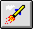

PFE other tool bar buttons
The remaining buttons on the tool
bar are:
New file or with <SHIFT> new template.
File open, or with <SHIFT> template open.
Find, or with <SHIFT> repeat last find.
Find and replace, or with <SHIFT> repeat last find and replace.
Undo last action.
Insert template.
Record macro, or with <SHIFT> replay macro.
Start DOS shell.
 Launch application.
Turn line numbering on/off.
File print.